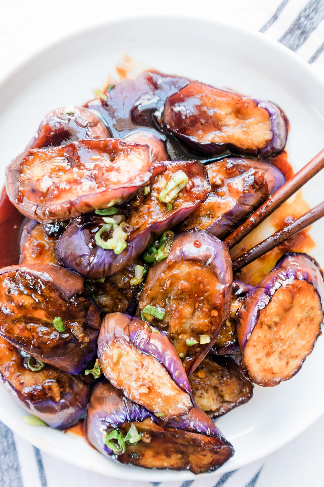

Garlic-Eggplant

A Classic Asian Meal!
Garlic-Eggplant is a classic Asian dish, often associated with
the Chinese culture and people. It involved eggplants, garlic sauce,
and often a protein of choice. This meal is hearty, and should be
eaten with rice or bread.
Ingredients:
- Eggplants
- Garlic Sauce
- Cooking Oil, High Heat
- Protein of Choice
Steps:
- Cut Eggplants into Small / Medium Pieces
- Heat skillet on medium-high heat
- Add oil to skillet
- Fry eggplants in the pan until browned
- Lower skillet heat to medium
- Add protein of choice and cook through
- Add Garlic Sauce
- Serve with Rice!